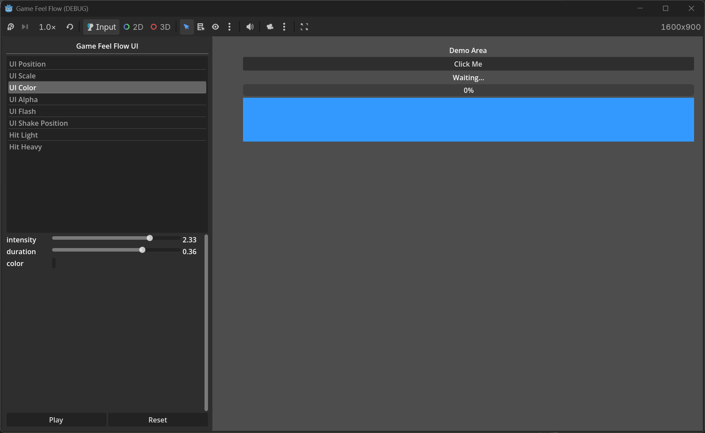

UI Effects
Pro Extension
Pro UI effects animate any CanvasItem node (buttons, labels, panels, sprites, progress bars) through the same GFFPlayer / GameFeelFlow API as gameplay effects.

Available UI Targets
| Effect Name | Target Class | What it animates |
|---|---|---|
ui_position |
GFFUIPositionTarget |
CanvasItem.position |
ui_scale |
GFFUIScaleTarget |
CanvasItem.scale |
ui_rotation |
GFFUIRotationTarget |
CanvasItem.rotation_degrees |
ui_color |
GFFUIColorTarget |
CanvasItem.modulate |
ui_alpha |
GFFUIAlphaTarget |
CanvasItem.modulate.a |
Preset Effects
Pro registers these ready-made effect names automatically:
| Preset | Target | Tweener | Typical use |
|---|---|---|---|
ui_position |
UI Position | linear | Slide a panel in/out |
ui_scale |
UI Scale | linear | Button pulse on hover/click |
ui_rotation |
UI Rotation | linear | Wobble a warning icon |
ui_color |
UI Color | color | Tint a button on focus |
ui_alpha |
UI Alpha | linear | Fade in a tooltip |
ui_flash |
UI Color | flash | Damage flash on a portrait |
ui_shake_position |
UI Position | shake | Shake a dialog on error |
ui_shake_scale |
UI Scale | shake | Jitter a button on invalid input |
ui_shake_rotation |
UI Rotation | shake | Wobble a locked icon |
Code Example
# One-shot button pulse
GameFeelFlow.play("ui_scale", $Button, GFFParams.create(1.0, 0.15))
# Custom effect with relative offset
var effect = GFFEffectCommon.new()
effect.target = GFFUIScaleTarget.new()
effect.target.target_value = Vector2(1.2, 1.2)
effect.target.mode = GFFUIScaleTarget.Mode.BY_AMOUNT
effect.target.pivot_offset = Vector2(64, 32) # center of a 128x64 button
effect.tweener = GFFElasticTweener.new()
effect.duration = 0.3
GameFeelFlow.play_effect($Button, effect)
UI Position Modes
GFFUIPositionTarget supports the same modes as gameplay transform targets:
TO_TARGET— move to the absolutetarget_value(multiplied by intensity).BY_AMOUNT— move bytarget_valuerelative to the current position.FROM_TARGET— start attarget_valueand move back to the current position.
UI Scale Pivot
GFFUIScaleTarget exposes an optional pivot_offset. When set, the node’s pivot_offset is applied before scaling, which keeps the scale anchored to a specific point instead of the top-left corner.
var target = GFFUIScaleTarget.new()
target.target_value = Vector2(1.3, 1.3)
target.pivot_offset = $Button.size / 2.0
target.mode = GFFUIScaleTarget.Mode.BY_AMOUNT
UI Color & Alpha
GFFUIColorTargetanimates the fullmodulatecolor.GFFUIAlphaTargetanimates onlymodulate.awhile preserving the existing RGB.
Both support Restore so the UI element returns to its original appearance after the effect.
Combining UI and Gameplay Effects
Because UI effects use the same GFFEffect architecture, you can chain them with gameplay effects in a single combo: